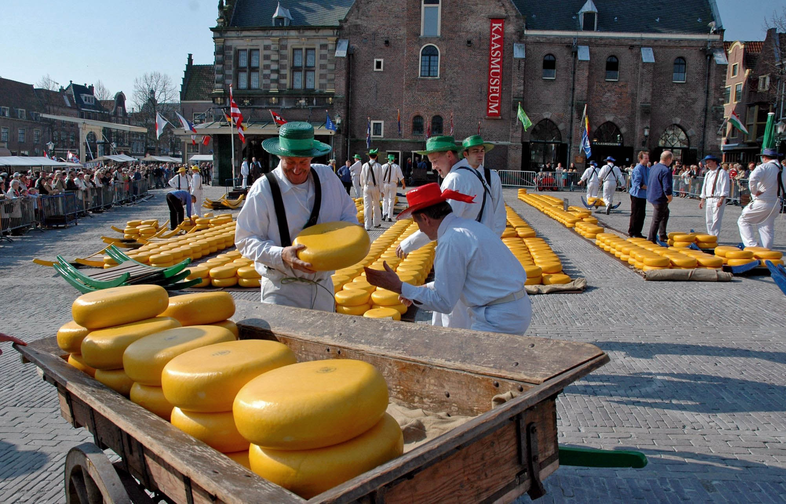
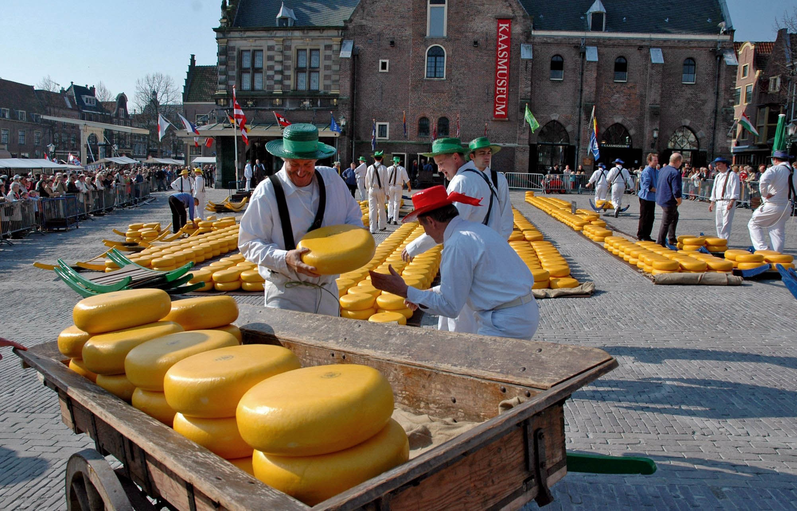
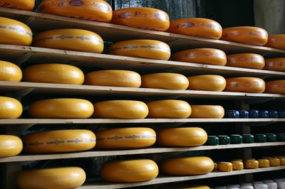
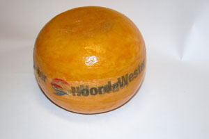
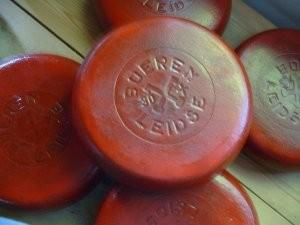

Você sabia que a Holanda é o maior exportador de flores do mundo? E que o queijo holandês é um dos mais consumidos globalmente? Conheça mais curiosidades sobre este país incrível.
Você sabia que a Holanda é o maior exportador de flores do mundo? E que o queijo holandês é um dos mais consumidos globalmente? Conheça mais curiosidades sobre este país incrível.
Quase dois terços de todo o queijo vendido é do tipo Gouda, mas existem diversos tipos e se nos aprofundarmos muito, vamos entrar num complexo mundo de texturas e sabores. Como não sou nenhuma expert, apesar de fiel amante da iguaria, vou me ater aos tipos mais conhecidos, ok? E estes são: Gouda, Edammer e Leidse.
O Gouda é aquele queijo cremoso, de formato circular, com alguns furinhos e que, infelizmente tem 48% de gordura. É, não é imoral, não é ilegal, mas com certeza engorda. Apresenta diversas variações: com especiarias, ervas e o baby gouda. Já o Edam tem 40 % de gordura e, fora da Holanda, é facilmente reconhecido pela embalagem de celofane vermelha e pelo sabor picante e seco.
Quase dois terços de todo o queijo vendido é do tipo Gouda, mas existem diversos tipos e se nos aprofundarmos muito, vamos entrar num complexo mundo de texturas e sabores. Como não sou nenhuma expert, apesar de fiel amante da iguaria, vou me ater aos tipos mais conhecidos, ok? E estes são: Gouda, Edammer e Leidse.
O Gouda e o Edam também se diferenciam por tempo de envelhecimento. Quanto mais longo o tempo de maturação, mais firme a consistência e mais marcante é o sabor.
